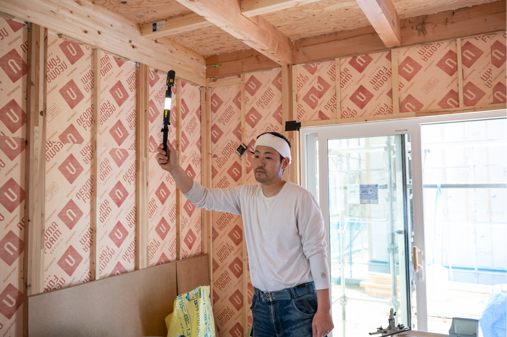
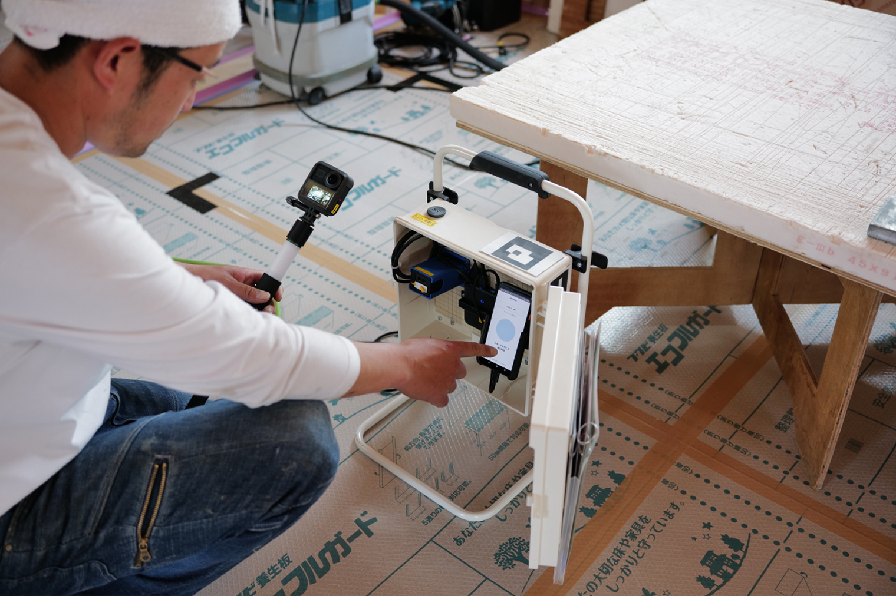
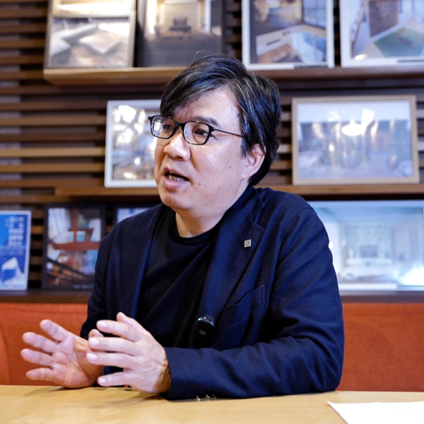
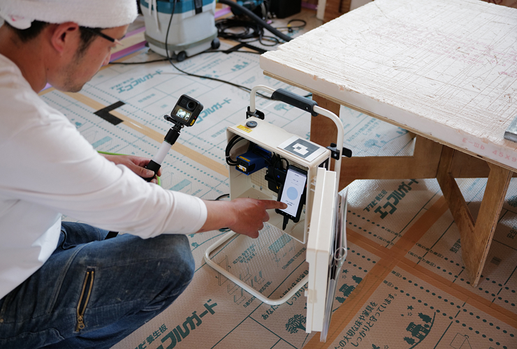
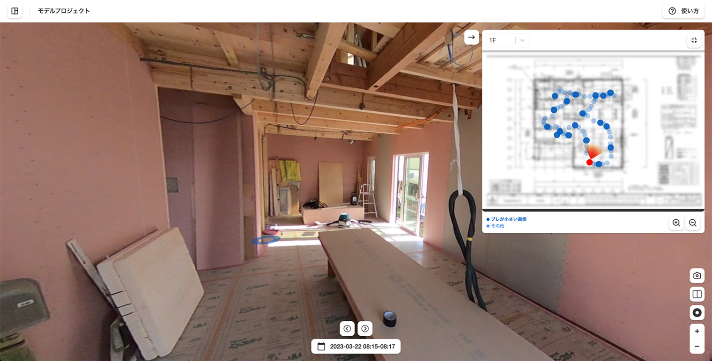
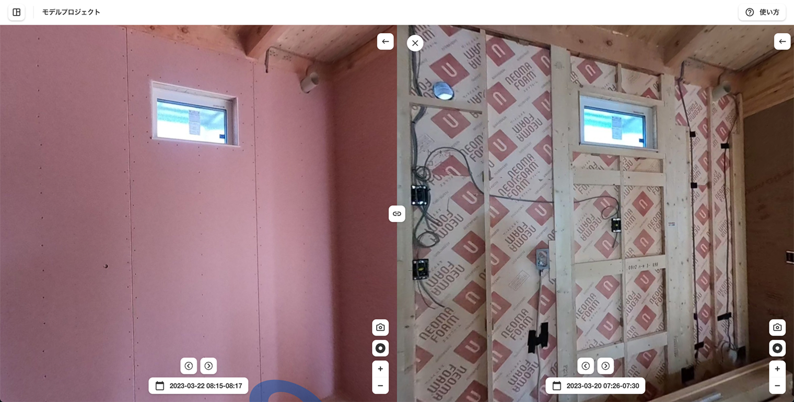
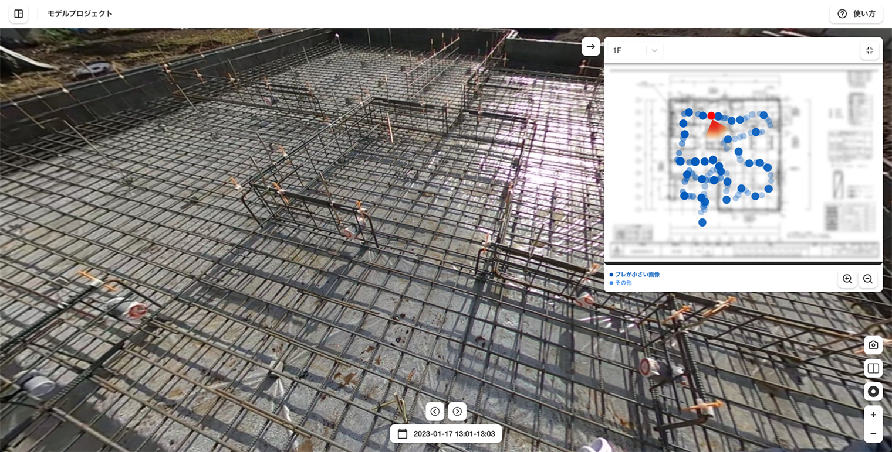

静岡県・山梨県を中心に注文住宅を年間100棟手掛けるリビングディー、AI施工管理サービス「zenshot」を全ての工事現場に導入し、現場監督の移動時間を最大60%削減
目次
株式会社SoftRoid（本社：東京都千代田区、代表：野﨑 大幹、以下SoftRoid）は、株式会社リビングディー（本社：静岡県富士市、代表：後藤 昇、旧社名第一建設株式会社、以下リビングディー）の全ての工事現場にIoTデバイスを設置し、AI施工管理サービス「zenshot」の全社導入を開始しいたしました。
目次

導入背景
静岡県に本拠地を置くハウスビルダーであるリビングディーは、年間100棟ほどの高性能・高品質な新築注文住宅の設計・施工を手掛けています。
高性能・高品質な住宅を提供するためにはこまめに現地で施工確認することが欠かせませんが、一般的に住宅工事の現場監督は同時に複数の現場を管理してるため、日々の現場巡回の移動時間が大きな業務負荷となっています。リビングディーにおいても、朝〜夕方まで現場を巡回してからオフィスに戻り、事務作業をするということもしばしばあり、施工管理社員の業務負担が多大になる状況でした。
上記のような課題感のもと、リビングディーでは兼ねてから品質向上と業務効率化を両立し、数十年先でもお客様のご要望に対応できる本質的な品質管理方法を検討していました。今回、課題を解決するツールとしてzenshotに興味を持っていただき、試験導入を経て効果を実感し、全現場へ導入しました。

導入効果
日々、手軽に現場全体の状況を網羅的に記録することで、下記のような効果がありました。
●遠隔から施工状況を確認できるようになり、現場監督の移動時間を最大60%削減
●現場確認回数が増えミスやトラブルを未然に防ぐことができるようになり、管理品質が向上
●隠蔽部含め現場の網羅的な記録が残るようになり、急な問い合わせや設計変更への対応力が向上
現場の声

代表取締役社長
後藤 昇 様
私は今後、記録自体が事業の骨になっていくものになると考えています。zenshotを通じて工事中の記録を残すことによって、当然高性能住宅の品質向上が期待できますが、工事の透明性や一貫したアフターメンテナンスを提供できる安心感など、オーナー顧客へのサポート強化にも繋がります。新規顧客においても、カタログ設計上の計算数値をどのように現場で施工管理するかを可視化でき、安定的な受注になります。住宅の建設会社として、自社が手がける物件を全て丸裸で記録して残しておくことが、 何よりも絶対に必要なツールになると確信しています。
代表取締役社長
後藤 昇 様
私は今後、記録自体が事業の骨になっていくものになると考えています。zenshotを通じて工事中の記録を残すことによって、当然高性能住宅の品質向上が期待できますが、工事の透明性や一貫したアフターメンテナンスを提供できる安心感など、オーナー顧客へのサポート強化にも繋がります。新規顧客においても、カタログ設計上の計算数値をどのように現場で施工管理するかを可視化でき、安定的な受注になります。住宅の建設会社として、自社が手がける物件を全て丸裸で記録して残しておくことが、 何よりも絶対に必要なツールになると確信しています。
ご利用の様子

現場での撮影の様子

作成された360度現場ビュー。天井・壁・床、360度ぐるりと現場全体を確認できる

隠蔽部(断熱材・下地)の前後の状態を簡単に比較・確認できる

基礎工程も網羅的に記録することができる
メディア掲載
リビングディー、AIカメラで工事現場監督の省力化
https://www.nikkei.com/article/DGXZQOCC146S40U3A710C2000000/
住宅現場を2分でデジタルツイン化！ AI施工管理「zenshot」でリビングディーが移動のムダを60%削減
https://ken-it.world/it/2023/07/digital-twin-in-2-minutes.html
zenshot導入で現場監督の移動時間6割削減に成功
https://www.s-housing.jp/archives/319150
決定版 住宅DXツールガイド2023
https://store.sohjusha.co.jp/product/4883511532/


まずは相談してみませんか？
お悩みに合わせて、活用方法をご案内いたします。
ぜひお気軽にご相談ください。